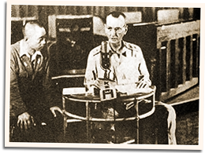

|
j
a v a s c r i p t |
Pg.2/2
May 7, 1942 continued

Wainwright Broadcast
The message was repeated, followed by more American music until 2344. Finally, speaking slowly in a tired and faltering voice, Wainwright spoke: This is Lieutenant General Jonathan M. Wainwright with a message for General William F. Sharp commanding the Mindanao and Visayan forces. Anyone receiving this message — notify General Sharp immediately. By virtue of the authority invested in me by the President of the United States, I, as commanding general of the U.S. forces in the Philippines, hereby resume direct command of General Sharp and of all troops under his command. I now give a direct order to General Sharp. Subject: Surrender. To Major General Sharp, commanding Mindanao — Visayan forces. The order: To put a stop to further useless sacrifice of human lives, yesterday I tendered to Lt. Homma, Commander-in-Chief of the Japanese forces in the Philippines, surrender of the four harbor forts of Corregidor. He declined to accept the surrender unless it included the forces under your command. As it became apparent that the garrisons of Corregidor would have been eventually overwhelmed and destroyed by aerial and artillery bombardment, supported by infantry.... I decided to accept, in the name of humanity, his proposition, and tendered at midnight May 6/7 to the senior Japanese officer in charge the formal surrender of all Philippine-American Forces in the Philippines. You will therefore be guided accordingly, and will, I repeat, will surrender all troops under your command to the proper Japanese officers. This decision on my part, you will realize, was forced upon me by means entirely beyond my control. You are hereby ordered by me to scrupulously carry out the provisions of this letter as well as such additions as may be suggested. Col. Jesse T. Treywick, Jr., C3 — my assistant chief of staff, will carry out the provisions of this letter together with such suggestions as this staff officer may give you. You may repeat this text of these instructions to General MacArthur by radio. Let me emphasize however, that there must be no thought whatever of disregarding the instructions contained. Failure to fully and honestly carry out the provisions of this order can have only the most disastrous results. Wainwright then gave instructions to each regional Commander in the provinces as to where to assemble for their surrender. The Japanese army and navy will not cease their operations until they realize the execution — faithful execution of these orders. I repeat: the Japanese army and navy will not cease their operations until they realize the execution — faithful execution — of these orders. I repeat: the Japanese army and navy will cease operations only after taking into consideration all the circumstances surrounding the execution of these instructions. His voice, somewhat strained and hoarse, broke and he coughed twice. Then quickly: "And this is Jonathan Wainwright signing off." The Filipino voice of a KZRH announcer ended the broadcast in a fervent tone: "And until then [tomorrow at 0755] may God bless and keep each one of you." That is precisely how the VoF closed its broadcasts in the last four months. |
|
|
|
|